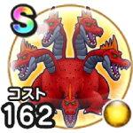

ラーヴァドラゴン
燃ゆる雪国～刀匠と雪月花～戦闘中一部を除くスキルで味方にスキルダメージをあげる効果を4回付与すると自身においかぜを付与こころ最大コスト+4スキルの斬撃・体技ダメージ+7%ジバリア属性斬撃・体技ダメージ+13%ギラ属性斬撃・体技ダメージ+9%ヒャド属性耐性+3% / 9.0点
くわしい特徴
【ランク特殊効果】 戦闘中一部を除くスキルで味方にスキルダメージをあげる効果を4回付与すると自身においかぜを付与こころ最大コスト+4スキルの斬撃・体技ダメージ+7%ジバリア属性斬撃・体技ダメージ+13%ギラ属性斬撃・体技ダメージ+9%ヒャド属性耐性+3%